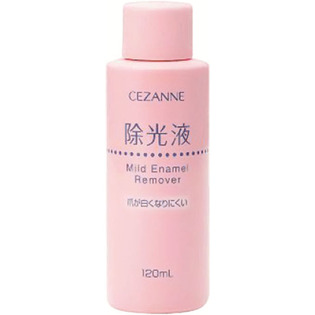

返回列表
产品名称：マイルド エナメルリムーバーＮ

セザンヌ化粧品 マイルド エナメルリムーバーＮ ＿
メーカー セザンヌ化粧品
JANコード 4939553007074
商品の特徴
エナメルを素早く落として爪が白くなりにくい除光液です。
使い切りやすいサイズです。
マリンコラーゲン・ホホバオイル（爪保護成分）配合です。
成分・分量
【成分】
アセトン、水、イソプロパノール、ミリスチン酸イソプロピル、水溶性コラーゲン、ホホバ種子油、香料
用法及び用量
【使用方法】
●コットンにリムーバーをたっぷりと含ませ、ネイルエナメルに充分なじませてから、ゆっくりふき取ります。
●爪を傷める原因となりますので、強く何回もこすらないようにご注意ください。